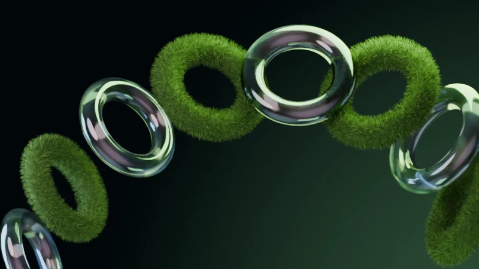
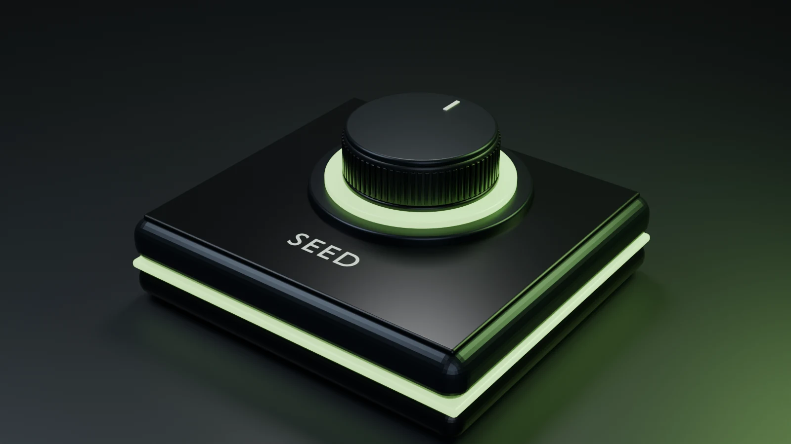
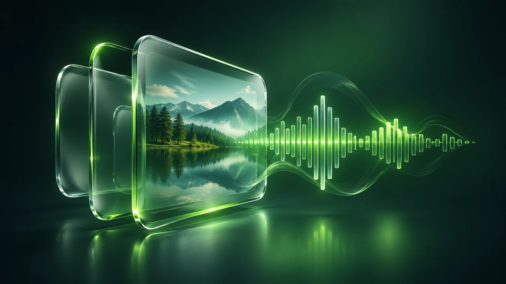
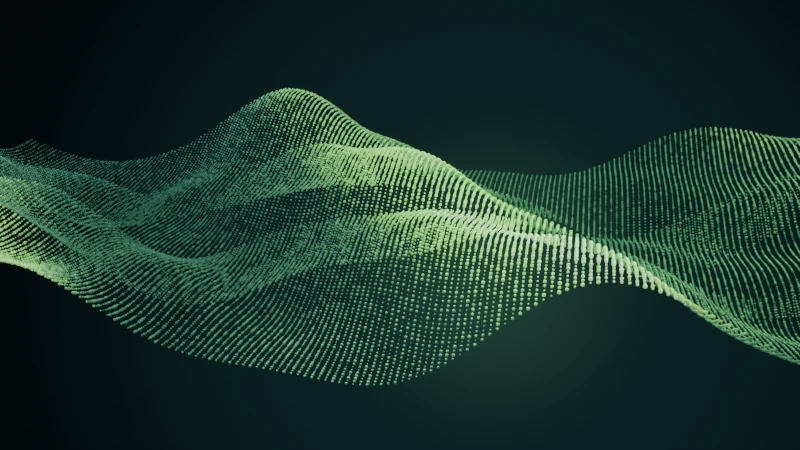
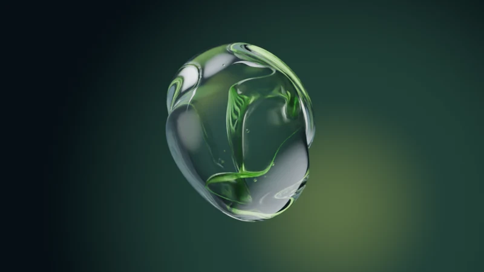

Building Melodies Through Repetition and Variation
Develop a musical motif through subtle transformations, repetition and contrast.
Tutorials, sound design notes, and insights into the creative process.

Develop a musical motif through subtle transformations, repetition and contrast.

Discover a new musical starting point with every generation.

Discover how visual material can inspire new textures, atmospheres and sonic identities.

Explore modulation, layering and movement to create rich, evolving soundscapes.

Discover unexpected ideas and turn generative material into your own musical language.